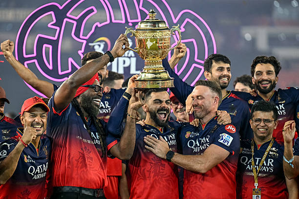
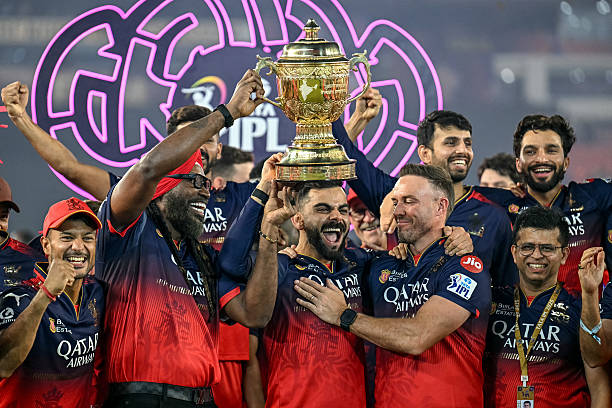

About RCB
Royal Challengers Bangalore (RCB) is a franchise cricket team based in Bengaluru. Founded in 2008, RCB is known for its loyal fan base and star players.
Royal Challengers Bangalore is one of the most popular IPL teams.
Royal Challengers Bangalore (RCB) is a franchise cricket team based in Bengaluru. Founded in 2008, RCB is known for its loyal fan base and star players.

Former captain and one of the greatest batsman in the world.
Current captain known for his aggressive leadership.

Explosive all-rounder famous for his big hitting.
 
